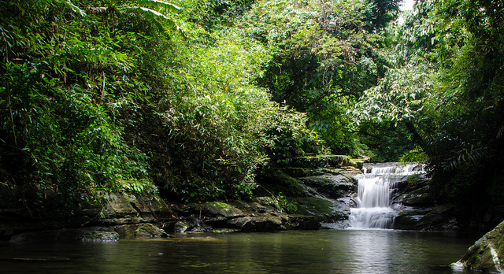

Trip to the Mountains
Date: August 5, 2024 | Author: Dipanwita Acharya
The quaint village of Mawlynnong, located approximately 90 km away from the capital city of Shillong, Meghalaya. The village may be small in size, and has a total population of less than 1000 individuals, but it is one of the most memorable places you will ever visit in India. This charming village offers visitors a pristine environment, which is already very difficult to come by these days. Like most places in Meghalaya, Mawlynnong also enjoys pleasant temperatures throughout the year. Add to that the quiet, almost idyllic surrounding, and you have one of the most beautiful holidays. Almost poetic in fact.